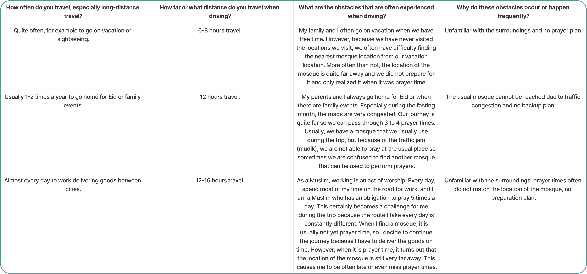

Resposibilitiy
- Conducted user research through interviews with 15 occupational drivers, observing their behavior while accompanying them on a journey from Kabil, Batam to Galang Island, covering a distance of 72.3 km, to understand their interaction with navigation apps in real-world driving scenarios, and conducting usability testing to identify key pain points and unmet need.
- Analyzed user research data to uncover recurring themes regarding driver frustrations, such as the difficulty of finding suitable mosques for each prayer time during their journeys and the limitations of using mobile phones while driving. These insights directly informed design decisions, prioritizing simplicity, clarity, and minimal distraction. .
- Designed a driver-centric UI with a clear hierarchy of information and familiar design elements to ensure minimal cognitive load and easy access to critical information while driving.
- Rapidly iterated on design concepts through multiple interactive prototypes based on user feedback. Usability testing identified overly lengthy notifications hindering information comprehension and buttons difficult to press while driving. These insights optimized the UI for intuitive and safe use behind the wheel.
- Identified and resolved 80% of usability issues before development through iterative prototyping and user testing.
- Effectively communicated design rationale and user research findings to stakeholders and developers through clear presentations, interactive prototypes, and detailed documentation, ensuring alignment and buy-in for the final design solution.
Problem
Muslim drivers, especially occupational drivers, often face difficulties in finding the most suitable mosque during their journeys. Occupational drivers or Muslim drivers who travel long distances of up to 12 hours or more will pass through 3 to 4 prayer times during their journey. Unfamiliarity with the environment and the existence of multiple time zones that cause differences in prayer times in each place lead to simple yet complex calculations, and unpredictable traffic conditions become separate obstacles for them. As a result, some drivers are forced to pray in unconventional locations like sidewalks or even miss prayers.
Process
User Research
Data collection through interviews was conducted with 15 Muslim drivers who make long-distance trips.The main purpose of the interview is to understand the experiences, opinions, habits, problems, and needs of Muslim drivers while traveling in order to produce a system that meets user needs. To achieve these goals, the interview questions asked to Muslim drivers include how often Muslim drivers make long-distance trips and how far the trips are, what are the obstacles experienced during the trip and why this can happen during the trip.
Observation was conducted by directly observing the needs, problems, and habits of drivers while driving. The observation was conducted by traveling with a driver from Kabil, Batam to Pulau Galang, which covered a distance of 72.3 km. Notes were taken for each activity carried out by the driver for later analysis. From the results of the observation, it was found that when the driver found a mosque but it was not yet prayer time, they decided to continue their journey and thought that there would be another mosque that they could use to pray. However, the next mosque was very far away, causing the driver to be late for prayer.
A literature review of the habits, problems, and needs of muslim drivers was also conducted by collecting and analyzing documents, journals, and other summaries of information to gain a better understanding. Although there are many applications that can provide information on the nearest mosque, there is no application that can help them plan their trip and simultaneously provide the most suitable mosque for each prayer time they pass through. In addition, these applications are still unable to provide recommendations for the nearest mosque based on traffic conditions, so there is a high chance that they will be late for prayer.
Ideation
Based on the findings from desk research and interviews conducted with 14 drivers, it was discovered that driver safety is of utmost importance. It has been discovered that drivers undertaking irregular long-distance journeys or journeys without a regular schedule tend to take specific steps before embarking on their trips. One of these steps is to inquire with friends or family members who have previously taken similar journeys about the road environment conditions, including road conditions, terrain, and traffic flow. Drivers do this with the intention of managing risks during their travels. To address these issues, we will assist irregular long-distance drivers in managing risks during their journeys by providing information about road environment conditions, which encompass road conditions, terrain, and traffic flow, and by preparing for potential conditions that may arise during the journey.
Based on that, concept testing was conducted on 3 solution concepts that align with the research findings. Concept testing was conducted with 6 drivers.
The feedback obtained from concept testing is further analyzed. The selected solution concept, based on the analysis results, is "Helping drivers find rest spots by providing information based on distance and available rest areas so that they can calculate driving time."
Testing and gathering feedback are continuously conducted to uncover user needs. Based on the feedback and analysis, it is found that Indonesia is the world's largest Muslim-majority country, with 83,04% of its population being Muslim. Mosques are the main place of worship for Muslims, and the most important ritual performed in mosques is prayer, which allows Muslims to meet their creator five times a day. Therefore, mosques are important places for Muslims. This is also true for Muslim drivers who want to follow their faith while traveling. However, Muslim drivers, especially occupational drivers, often find it difficult to find the most suitable mosque when they are on the go. Those who travel long distances of up to 12 hours will usually pass through 3 to 4 prayer times during their journey.
There are two problems that Muslim drivers often experience when performing prayers while on the go. First, drivers who make irregular trips are not familiar with the environment, so when prayer time arrives, they are confused about finding a mosque to pray in. When they pass by a mosque but the prayer time has not yet arrived, they decide to continue their journey, thinking there will be another mosque ahead. However, often when prayer time comes, the next mosque is very far away. Second, this also happens to drivers who make regular trips. Usually, they already have a mosque that they usually use for prayer, but due to unpredictable traffic conditions such as congestion, they cannot reach the mosque on time. When this happens, they are confused about finding another mosque to pray in. This happens due to a lack of planning during the trip and anticipation of traffic conditions.
Design


Tech Stack
Testing
The table below shows the user testing scenarios for the application that was built. There are 6 scenarios that were tested on users. For each scenario, there are detailed objectives, end states, and needs that need to be met and become parameters for success in the testing that is carried out. In the final test results, no errors or bugs were found in each functional testing process of the application and in accordance with expectations. With this, it is ensured that this application has been running well and can be used immediately.

Project information
- Category: Utility
- Project date: Sep 2023 - Dec 2023
- Description: Jalur assists occupational drivers in practicing their faith during long drives, by identifying mosques along their route according to the local prayer time.
- In December of 2023, Jalur, was selected as the most impactful application and became the representative of Apple Developer Academy in Indonesia